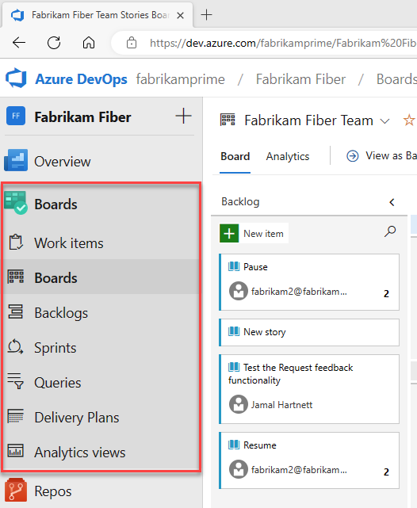
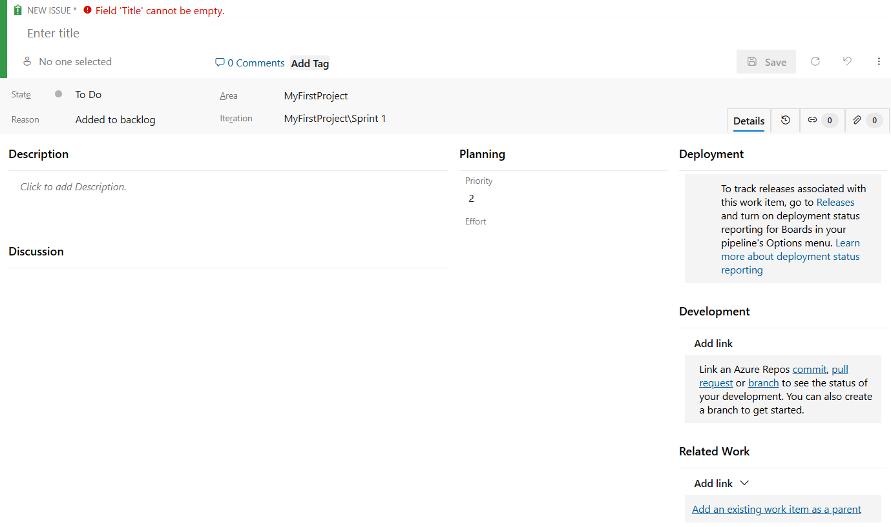
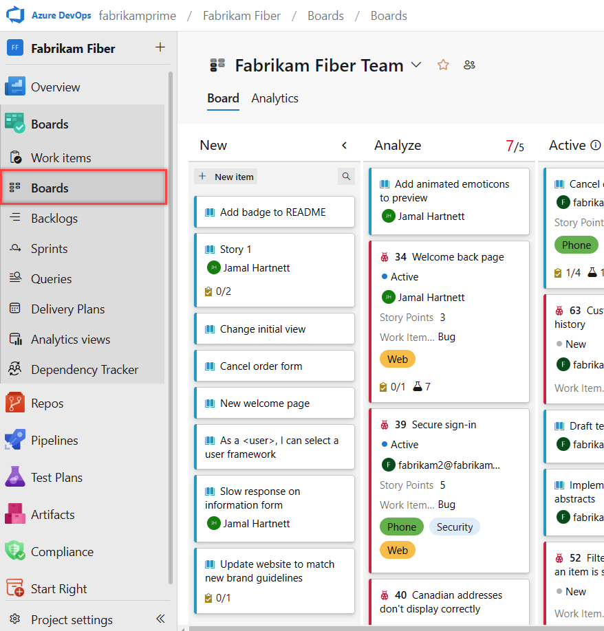
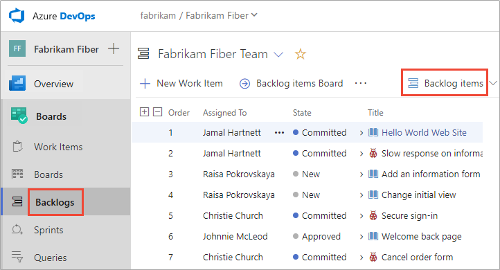
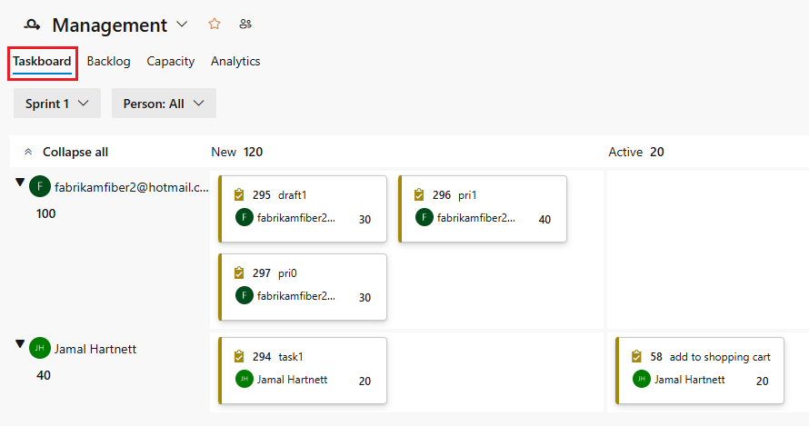
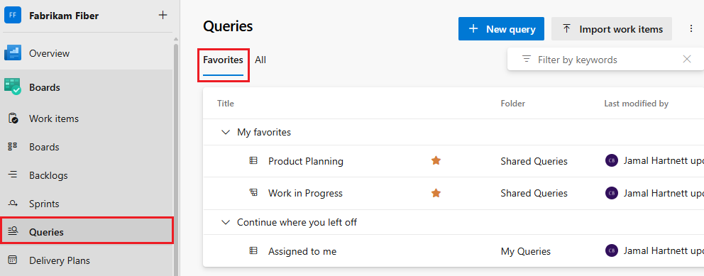
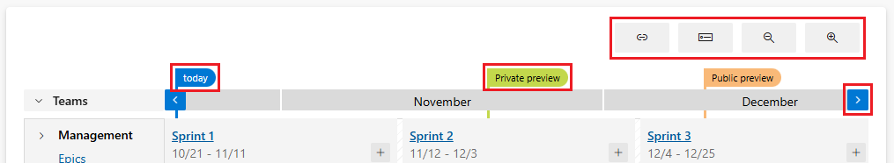
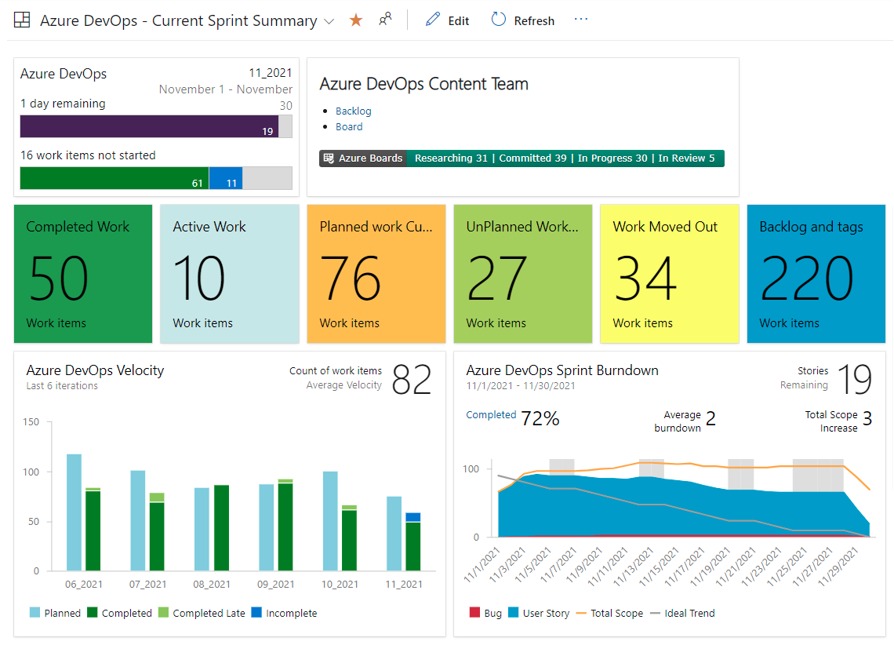

一個服務,七個協作的 hub
Azure Boards 是一套以網頁為介面的服務,用於規劃、追蹤與討論整個開發生命週期的工作,並原生支援敏捷流程。它把「需求是什麼」「目前做到哪」「誰負責」「何時完成」這些問題,集中在同一處呈現。
進入 Boards 後,左側會展開七個 hub,各自負責一種檢視角度。這七個 hub 並非七套獨立的資料,而是同一批 work item 的不同呈現方式——在任一 hub 修改,其餘 hub 都會同步反映。理解這七者的分工,是熟悉整個服務的起點:

| Hub | 負責什麼 |
|---|---|
| Work items | 列出所有工作項目 (work item) 的清單,可依負責人、狀態或類型篩選,用來快速找到想看的工作 |
| Boards | 用卡片呈現每一件工作,把卡片拖到下一欄,就代表這件工作的進度往前推進 |
| Backlogs | 一份由上往下排好優先順序的工作清單,愈上面表示愈該先做 |
| Sprints | 規劃在一個 sprint (一段固定長度的開發週期,通常一至四週) 內要完成哪些工作,並追蹤進度 |
| Queries | 把常用的篩選條件存下來重複使用,結果還能放到儀表板上變成圖表 |
| Delivery Plans | 用月曆的形式,把多個團隊的工作排在時間軸上,看清楚誰在什麼時候交付 |
| Analytics views | 把工作資料整理成適合製作報表與統計圖表的格式 |
work item 串起整個開發流程
Boards 真正的價值,不只在於管理需求,更在於它讓一個 work item 一路連結到實作與驗證它的每個產物,與其他 Azure DevOps 服務串成端對端的可追蹤性。以一個 User Story #1234「使用者可用 email 與密碼註冊」為例,看它如何串起整條鏈:
users/jason/1234-user-registration 分支,並自動與該需求關聯。分支自第一行程式碼起便連回需求。work item:追蹤工作的最小單位
work item 是 Boards 中追蹤工作的基本單位。無論 Epic 或 Task,本質上都是一張結構化的表單,記錄一件工作的全部資訊。下圖為新增一個 work item 時的編輯畫面:

畫面上的主要欄位與作用,依其在表單中的位置整理如下:
| 欄位 / 區塊 | 作用 |
|---|---|
| Title | 一句話描述這件工作;為必填欄位,留空無法儲存 |
| Assigned To | 負責這件工作的成員 |
| Tags | 自訂關鍵字標記,便於跨類型分類與篩選 |
| State / Reason | 目前進度,實際值依範本而異 (如 Basic 的 To Do / Doing / Done、Agile 的 New / Active / Resolved / Closed);Reason 記錄進入該狀態的緣由 |
| Area / Iteration | 歸屬於哪個團隊區域 (誰),以及排在哪個 sprint/iteration (何時) |
| Description | 需求細節、驗收條件或重現步驟 |
| Discussion | 留言串,可 @mention 成員;所有變更皆留下歷史紀錄 |
| Planning | Priority (優先順序) 與 Effort (預估工作量),供排序與容量規劃使用 |
| Development | 連結 Azure Repos 的 commit、pull request 或 branch,直接從 work item 觀察開發狀態 |
| Related Work | 建立與其他 work item 的父子或關聯連結,例如指定某 Epic 為其 parent |
| Details / History / Links / Attachments | 右上分頁:詳細欄位、變更歷史、關聯項目與附件;頁籤上的數字代表目前的數量 |
建立 work item 的最直接路徑,是在 Work items hub 點選「新增工作項目」,選擇類型 (如 User Story),填入標題後即可儲存;其餘欄位可稍後補齊。
work item 的類型與階層
建立 Project 時選擇的流程範本 (process),決定了可用的 work item 類型與其階層關係。Azure DevOps 內建三種範本:
| 範本 | 階層 (由大到小) | 其他常見 work item | 適合 |
|---|---|---|---|
| Basic | Epic → Issue → Task | — | 初次接觸、小型團隊 |
| Agile | Epic → Feature → User Story → Task | Bug、Issue、Test Case | 一般敏捷團隊 |
| Scrum | Epic → Feature → Product Backlog Item → Task | Bug、Impediment、Test Case | 採用 Scrum 框架的團隊 |
三者的需求單位不同 (Basic 用 Issue、Agile 用 User Story、Scrum 用 Product Backlog Item),但頂層的 Epic/Feature 與底層的 Task 大致共通。以下以最常用的 Agile 範本為例,看需求由大到小拆解為四層,另有 Bug 作為缺陷單位:
| 層級 | 典型時間跨度 | 描述的內容 |
|---|---|---|
| Epic | 數個 sprint 至數季 | 大型業務主題或目標,例如「使用者帳號模組」 |
| Feature | 數個 sprint | Epic 之下可交付的功能集,例如「註冊與登入」 |
| User Story | 一個 sprint 內 | 站在使用者角度的最小需求,可獨立驗收 |
| Task | 數小時至一兩天 | 實作 User Story 所需的具體執行步驟 |
| Bug | 視嚴重度而定 | 缺陷;可與需求項目同層,或視為其子項 |
Boards:用 Kanban 讓工作流動可視化
Boards 以 Kanban 看板的形式呈現 work item,每張卡片代表一個項目,每一欄對應一種狀態。將卡片由左欄拖放到右欄,即同步更新該 work item 的 state——進度的推進變成可視化的動作。

Backlogs:依優先順序排列的工作清單
Backlogs 是一份依優先順序排列的 work item 清單。它與 Work items hub 操作同一批資料,但用途不同:Work items 偏個人視角,用來檢索指派給我或我追蹤的工作;Backlogs 偏團隊視角,用來排序與規劃。Boards 強調「流動」,Backlogs 則強調「順序」——把最該先做的項目排在最上方,團隊由上而下認領工作。
Backlog 可在不同層級之間切換,分別檢視不同顆粒度的需求:由 User Story 的細項清單,逐層上推到 Feature 與 Epic 的整體規劃,讓需求的拆解與排序在同一處完成。
決定 work item 出現在哪一份 Backlog 的關鍵,是 Area Path 欄位——它把 work item 歸屬於某個團隊區域,該項目便會出現在對應 Team 的 Backlogs 與 Boards,團隊據此只看見屬於自己的工作。
清單的順序由人工拖放決定,愈上面愈優先。拖動項目時,Azure Boards 會在背景更新一個隱藏的排序欄位 (Agile/CMMI 為 Stack Rank、Scrum 為 Backlog Priority),作為優先序的真正來源。

Sprints:在固定週期內認領並完成工作
sprint (亦稱 iteration) 是一段固定長度的開發週期,通常為一至四週。團隊在每個 sprint 開始時,從 Backlog 上方挑選一批工作作為本期目標,並在週期內完成。Sprints hub 即用於規劃與追蹤這段期間的工作。
決定 work item 屬於哪個 sprint 的關鍵,是 Iteration Path 欄位——把它指向某個 iteration,該 work item 便納入該 sprint 的範圍。
規劃一個 sprint 時,典型流程如下:

Queries:儲存可重複使用的篩選清單
Queries 讓 work item 的篩選條件得以儲存並重複使用。與其每次手動翻找,不如把「指派給我且尚未關閉的所有 Bug」這類條件存成一筆 query,隨時點開即得最新結果。

Delivery Plans:跨團隊的交付行事曆
Delivery Plans 以行事曆檢視呈現跨多個團隊、跨多個 sprint 的交付排程。它把各團隊的 Feature 或 Epic 攤在時間軸上,協助觀察彼此的相依關係與時程衝突,適合用於跨團隊的版本規劃與里程碑對齊。
相較於 Backlog 與 Sprint 著眼於單一團隊自身的工作,Delivery Plans 提供的是跨團隊的鳥瞰視角:哪個團隊的哪項 Feature 預計在哪個 sprint 交付,在同一條時間軸上一眼可辨。

Analytics views:報表與圖表的資料來源
這頁只負責定義「Power BI 會拉到哪些資料」;要把數字看成圖表,得到 Power BI 端去做。
